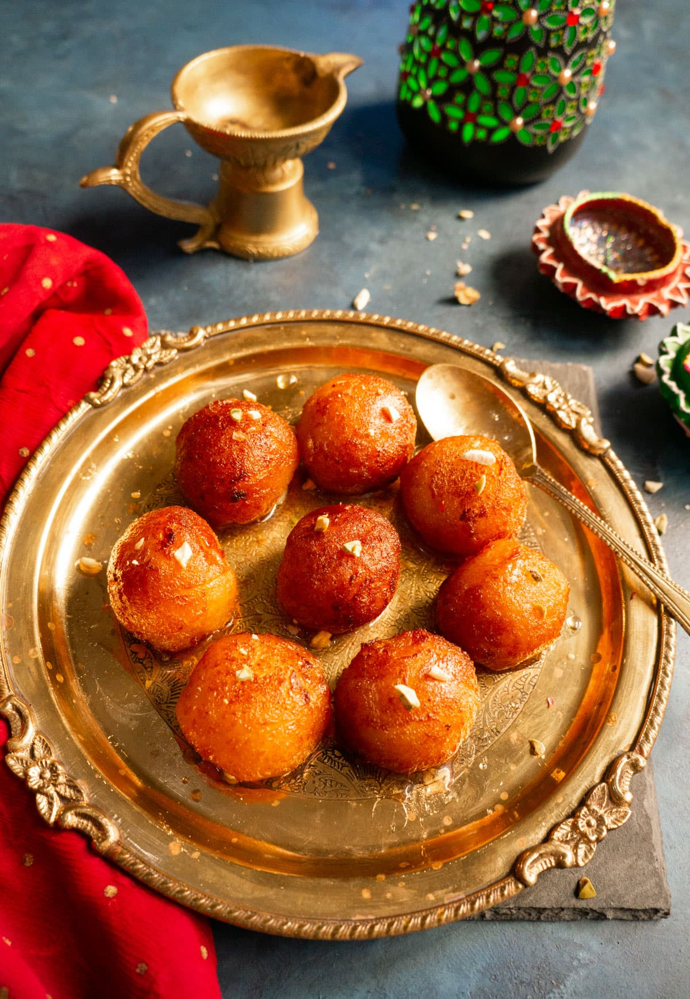

Gulab Jamun

Description
Gulab jamun is a popular Indian sweet made from soft milk-based dough, shaped into small balls, deep-fried until golden, and soaked in warm sugar syrup flavored with cardamom.
Ingredients
- Milk powder
- All-purpose flour (maida)
- Sugar
- Cardamom
Steps
- Prepare a soft dough using milk powder, flour, and a little water.
- Shape the dough into small smooth balls.
- Deep-fry the balls until golden brown.
- Soak them in warm sugar syrup flavored with cardamom.